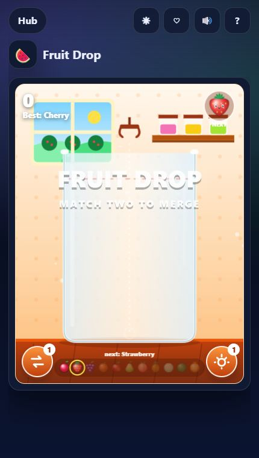
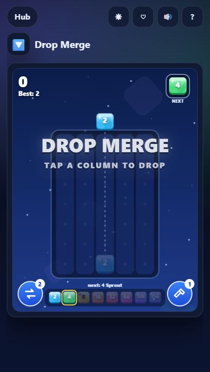
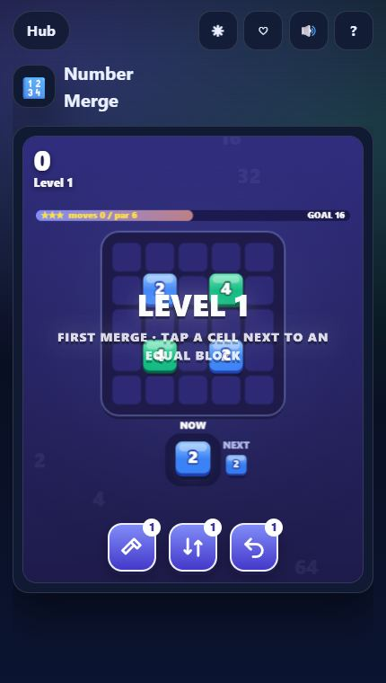
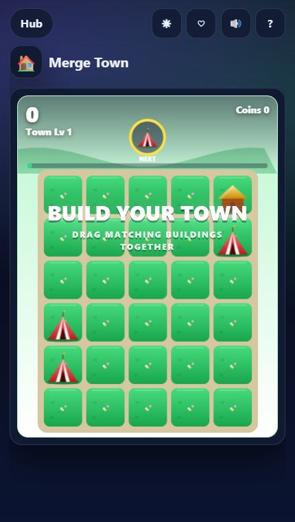
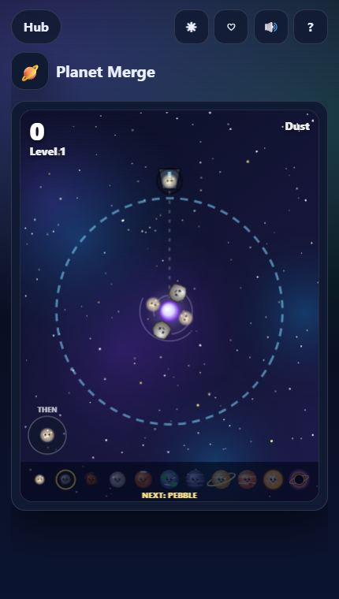
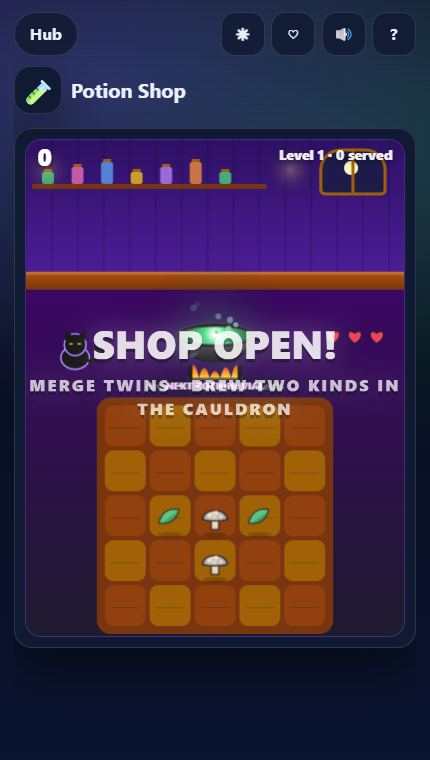

The loop: order out of chaos
Every merge game starts with clutter — fruit piling up in a jar, numbers filling a column, tents crowding a town. Each merge removes two things and leaves one better thing behind. You are constantly turning a mess into something tidier and more valuable, and you can see it happen.
Three things make that loop so moreish:
- Visible progress. Cherry → strawberry → grape → orange… you always know what the next step looks like, and the top tier is a clear goal.
- Chain reactions. One drop can set off a cascade you did not fully plan. That little surprise is the best moment in the genre.
- Pressure you control. The board fills up, but slowly, and only as fast as you play. It is tense without being stressful.
7 merge games to play free

Fruit Drop
The famous "watermelon game" loop. Drag the claw, release a fruit, and two identical fruits that touch merge into the next one — all the way up to a Golden Melon. If fruit stays above the red line for two seconds, the jar overflows.
Tip: keep small fruit on one side and big fruit on the other so merges do not get trapped under larger ones.

Drop Merge
Number blocks drop into columns and merge with every equal neighbour — below, left and right. Merging with two at once doubles twice, and merged blocks fall for cascade bonuses.
Tip: build a "staircase" of values (64, 32, 16…) in one row so a single drop can chain all the way up.

Hexa Sort
A calmer merge-sort hybrid: place stacks of hex tiles, let matching top colours flip together, and burst ten of a colour at once. 30 hand-built boards add locked hexes, odd shapes and a boss board every 5th level.

Number Merge
Place number blocks on a grid; connected equal blocks merge into the one you just placed and double for every extra block. Rainbow jokers copy the best neighbour and bombs clear a 3×3.

Merge Town
Buildings drop onto the board: merge tent into hut, cottage, house, villa, tower, castle and beyond. If a building drops when every plot is full, the town is full and the run ends.
Tip: save cranes for high tiers — upgrading a tower is worth far more than upgrading a tent.

Planet Merge
Merge with gravity: fling dust and pebbles into a central well and grow them into moons, planets, suns and finally a black hole. Keep the pile inside the dashed ring — anything poking out for two seconds ends the run.

Potion Shop
A merge game with customers. Merge leaves into herbs and shards into gems, brew two different ingredients into potions, then serve customers before their patience runs out — three upset customers close the shop.
Five tips that work in every merge game
- Keep a corner for big items. High tiers should sit where they cannot block anything.
- Watch the "next" preview. Every game here shows the next piece — plan two moves, not one.
- Do not merge everything at once. Sometimes holding a pair for a bigger chain scores more.
- Use helpers early, not last-second. A swap or hammer used calmly saves more than one used in a panic.
- Spend coins on space. Upgrades like a wider jar or an extra open hex beat raw coin bonuses.
Want more? Every merge title lives under the Merge filter in the Play Hub. If you like tidy-up puzzles, read our jam puzzle tips next.